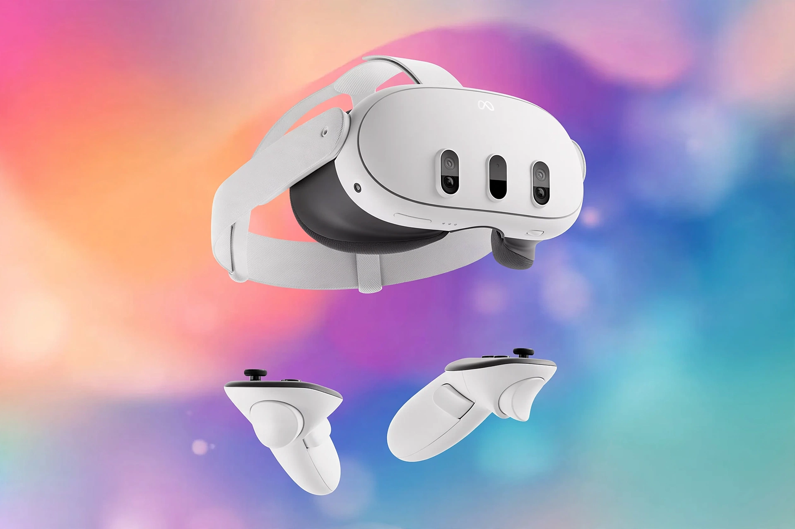

[Image: White Quest-style headset on a colourful gradient]
Hardware
Quest 3 (the flagship, with pancake lenses and a Snapdragon XR2 Gen 2 chip, as recalled) and Quest 3S (the lower-priced model) anchor the store page, with storage tiers, Elite straps, charging docks and carrying cases as accessories.
Content
The Quest Store and the Horizon Worlds/social push, plus App Lab, supply games and apps; flagship titles promoted over the years include Beat Saber and major franchise VR entries.